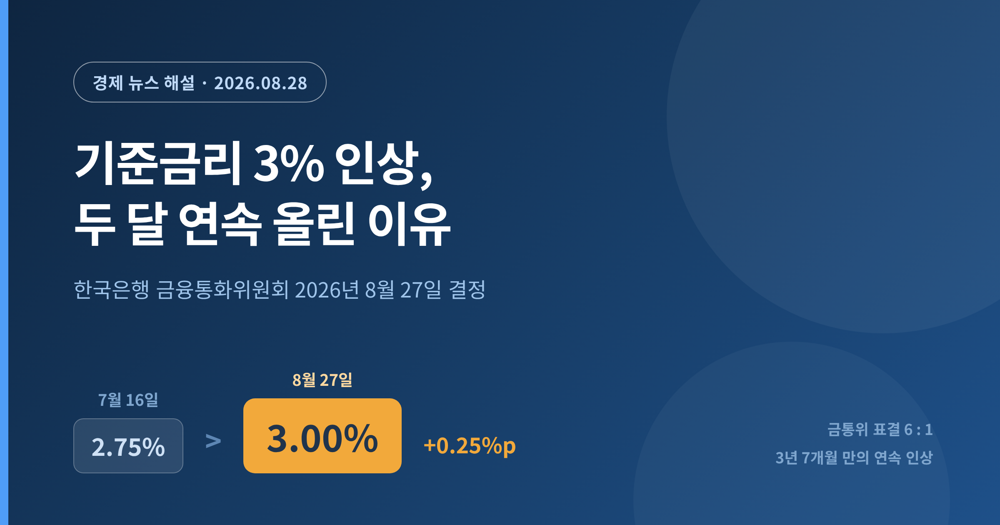
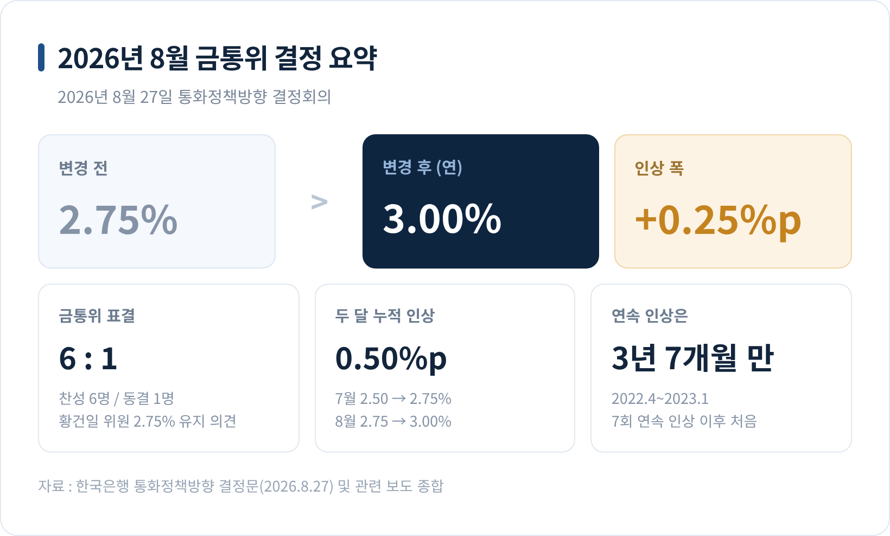
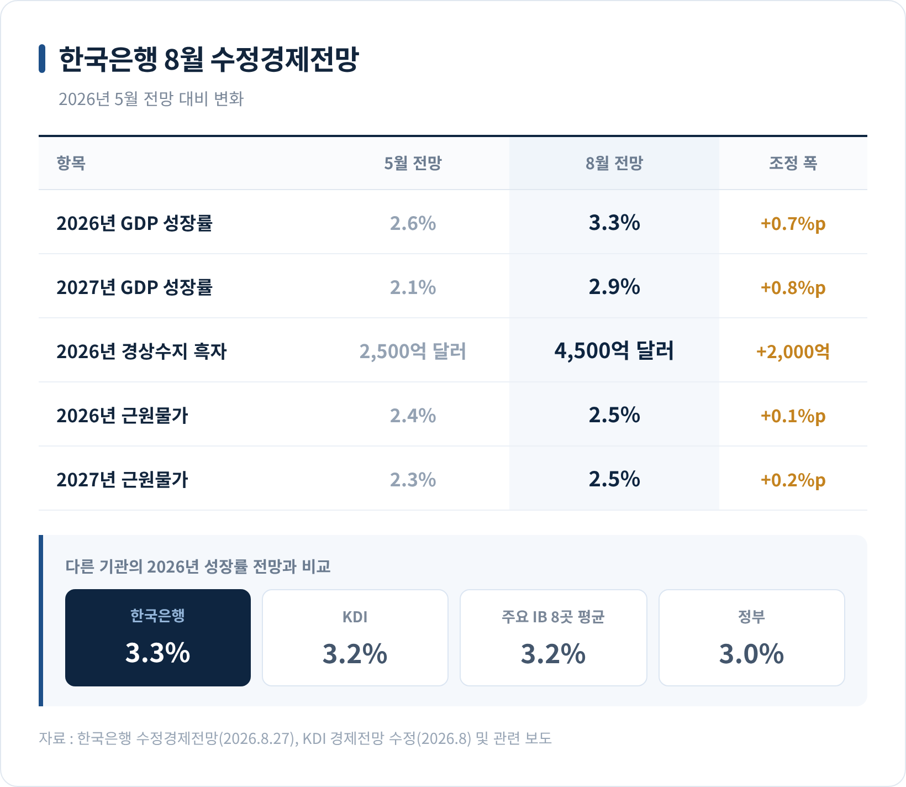
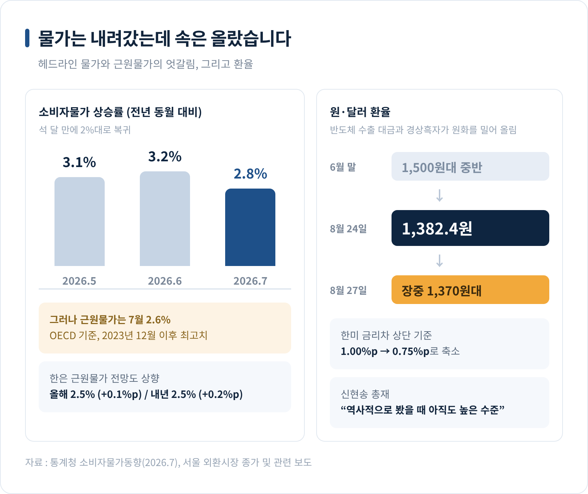
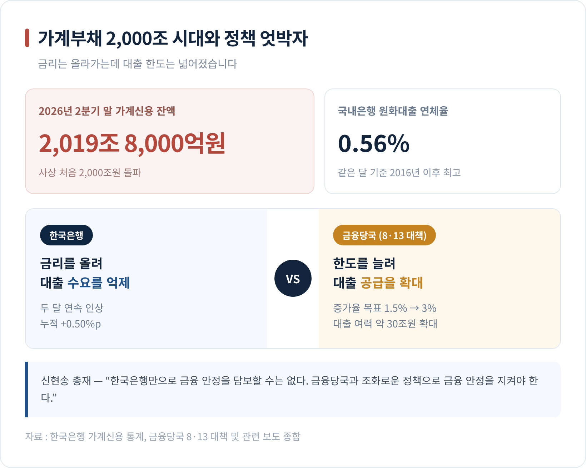
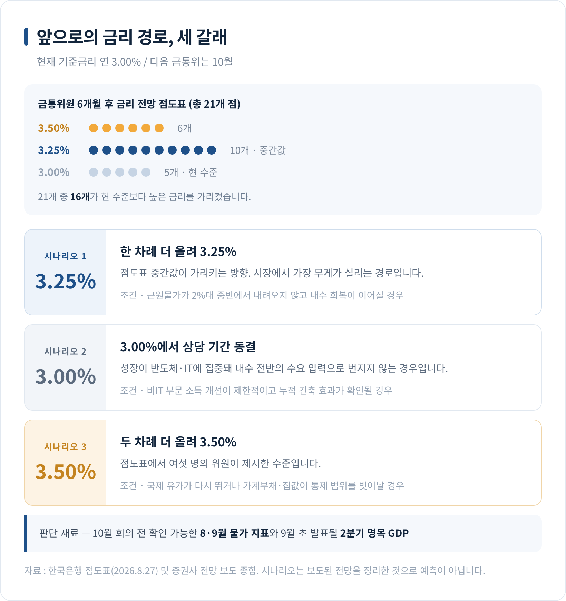

기준금리 3% 인상, 한은이 두 달 연속 올린 이유와 앞으로의 금리 경로
이번 글에서는 2026년 8월 27일 한국은행 금융통화위원회의 기준금리 인상 결정을 정리해 보겠습니다. 숫자만 나열하기보다, 왜 이 시점에 두 달 연속으로 올렸는지 그 배경과 쟁점까지 함께 살펴보려 합니다.

세 줄 요약
- 한국은행은 8월 27일 기준금리를 연 2.75%에서 3.00%로 0.25%포인트 올렸습니다. 7월에 이은 두 달 연속 인상입니다.
- 올해 성장률 전망을 2.6%에서 3.3%로 크게 높인 것이 결정적 근거였습니다. 반도체 호황이 물가 압력으로 번지기 전에 미리 막겠다는 판단입니다.
- 금통위원 7명 중 6명이 찬성했고, 점도표에서는 21개 점 가운데 16개가 지금보다 높은 금리를 가리켰습니다.
8월 27일, 금통위 회의실에서 벌어진 일
한국은행 금융통화위원회는 27일 통화정책방향 결정회의에서 기준금리를 연 2.75%에서 3.00%로 0.25%포인트 인상했습니다. 지난 7월 16일 2.50%에서 2.75%로 올린 데 이은 두 달 연속 인상입니다. 두 달 만에 누적 0.50%포인트가 오른 셈입니다.
연속 인상 자체가 오랜만입니다. 금통위가 기준금리를 연달아 올린 것은 2022년 4월부터 2023년 1월까지 일곱 차례 이어졌던 인상 이후 3년 7개월 만입니다. 인상 사이클을 다시 연 직후 바로 다음 회의에서 또 올린 것은 이례적이라는 평가도 나옵니다.
표결은 만장일치가 아니었습니다. 금통위원 7명 가운데 6명이 인상에 찬성했고, 황건일 위원은 기준금리를 연 2.75%로 유지해야 한다는 동결 소수의견을 냈습니다. 금리를 올리는 결정에서 동결 소수의견이 나온 것 역시 2023년 1월 이후 3년 7개월 만입니다.
결정문의 문장은 짧지만 방향은 분명했습니다. "국내경제는 수출 호조와 내수 회복에 힘입어 예상보다 높은 성장세를 이어가는 가운데 물가상승률은 상당기간 목표수준을 상회할 것으로 전망된다"는 진단이었습니다.

왜 중요한가 — 무게중심이 옮겨갔습니다
이번 결정의 의미는 0.25%포인트라는 폭에 있지 않습니다. 통화정책의 무게중심이 어디에 놓여 있는지가 바뀐 데 있습니다.
예전에는 경기를 떠받치는 쪽에 무게가 실려 있었습니다. 지금은 물가를 잡는 쪽으로 확실히 기울었습니다. 한은이 스스로 성장 전망을 큰 폭으로 높이면서, 더는 경기를 걱정해 금리를 낮게 유지할 이유가 없다고 판단한 것입니다.
신현송 총재의 설명이 이 전환을 잘 보여줍니다. 그는 기자간담회에서 "뒤늦은 대응은 비용이 크다"고 말했습니다. 물가 오름세가 경제 전반으로 확산한 뒤에 대응하면 훨씬 큰 폭의 긴축이 필요해진다는 뜻입니다.
총재는 '호미로 막을 것을 가래로 막는다'는 속담을 인용하며 이번 결정을 "호미로 하는 정책"이라고 표현했습니다. 아직 불이 크게 번지지 않았을 때 작은 도구로 끄겠다는 비유입니다.
가계 입장에서는 체감이 다릅니다. 기준금리 0.50%포인트 상승은 변동금리 대출을 쓰는 가구의 월 상환액에 그대로 반영됩니다. 물가를 잡기 위한 조치가, 대출을 안고 사는 사람에게는 당장의 비용으로 돌아오는 구조입니다.
배경 하나 — 반도체가 밀어 올린 성장
한은이 두 달 연속 금리를 올릴 수 있었던 가장 큰 이유는 경기가 예상보다 훨씬 좋았기 때문입니다.
한은은 같은 날 발표한 수정경제전망에서 올해 실질 GDP 성장률 전망치를 기존 2.6%에서 3.3%로 0.7%포인트 끌어올렸습니다. 전망치 기준으로는 2021년 5월 이후 5년여 만에 가장 높은 수준입니다. 내년 전망치도 2.1%에서 2.9%로 높였습니다.
이 3.3%는 정부 전망(3.0%)은 물론 한국개발연구원(KDI)의 3.2%, 주요 투자은행 여덟 곳의 평균 전망치 3.2%도 웃도는 숫자입니다. 경상수지 흑자 전망 역시 2,500억 달러에서 4,500억 달러로 대폭 상향됐습니다.
실적 지표가 이를 뒷받침합니다. 2026년 2분기 실질 GDP는 전분기 대비 0.6% 성장해 한은 전망치의 세 배에 달했습니다. 1분기 1.8%에 이어 상반기 누계로는 3.8%, 4년 6개월 만의 최고치입니다.
더 눈에 띄는 것은 소득 지표입니다. 2분기 실질 국내총소득(GDI)은 전분기 대비 3.6%, 전년 동기 대비 15.6% 늘었습니다. 전년 동기 기준으로 1988년 1분기 이후 38년 만의 최고 상승폭입니다. 교역조건이 좋아지면서, 같은 양을 생산하고도 손에 쥐는 실질 소득이 더 커졌다는 뜻입니다.
이동렬 한은 조사국장은 "IT 부문 비중이 크게 확대되는 방향으로 우리 산업구조가 재편되면서 내년에도 IT 부문의 성장 기여도가 높은 수준을 나타낼 것"이라고 설명했습니다. 이번 호황의 성격을 짚은 말입니다.

배경 둘 — 헤드라인은 내렸는데, 속은 올랐습니다
물가 지표만 놓고 보면 언뜻 인상할 이유가 없어 보입니다. 7월 소비자물가 상승률은 2.8%로, 5월 3.1%와 6월 3.2%보다 낮아지며 석 달 만에 2%대로 돌아왔습니다.
문제는 안쪽입니다. 기조적 흐름을 보여주는 근원물가는 오히려 올랐습니다. OECD 기준 근원물가(식료품·에너지 제외)는 7월에 2.6% 상승해 2023년 12월 이후 가장 높았습니다. 농산물·석유류를 제외한 국내 기준 근원물가도 2.5% 올랐습니다.
한은도 이 부분을 그대로 반영했습니다. 소비자물가 상승률 전망은 5월 수준을 유지했지만, 근원물가 전망치는 올해 2.5%, 내년 2.5%로 각각 0.1%포인트, 0.2%포인트 높였습니다. 이 국장은 "그간 누적된 비용 충격의 전가가 이어지고 수요 압력도 확대됨에 따라 상향 조정했다"고 말했습니다.
한은이 그린 경로는 이렇습니다. 반도체 호황이 수출과 소득을 늘리고, 늘어난 소득이 내수를 회복시키며, 그 내수가 다시 수요 측 물가 압력으로 이어진다는 것입니다. 지금까지의 물가 상승이 주로 비용 때문이었다면, 앞으로는 수요 때문일 수 있다는 진단입니다.
환율도 같은 맥락에 놓입니다. 원·달러 환율은 8월 24일 서울 외환시장에서 1,382.4원에 마감하며 1년 안팎 만의 최저 수준으로 내려왔습니다. 6월 말 1,500원대 중반까지 치솟았던 것을 생각하면 큰 폭의 하락입니다. 반도체 수출 대금이 원화로 바뀌는 물량, 대규모 경상수지 흑자가 원화를 밀어 올렸습니다.
그럼에도 신 총재는 "역사적으로 봤을 때 아직도 높은 수준"이라고 평가했습니다. 그러면서 "통화정책의 선제적 대응을 통해 원화가 추가 강세로 갈 여지가 있다"고 했습니다. 원화가 강해지면 원유와 원자재의 원화 환산 가격이 내려가 수입물가 압력이 줄어듭니다. 금리 인상이 물가를 잡는 또 하나의 경로인 셈입니다.
실제로 이번 인상으로 미국 연방준비제도의 정책금리(연 3.50~3.75%)와의 격차는 상단 기준 1.00%포인트에서 0.75%포인트로 좁혀졌습니다. 결정 직후 원·달러 환율은 장중 1,370원대까지 내려갔습니다.

쟁점 — 2,000조 가계부채, 그리고 엇갈리는 정책
인상의 명분이 뚜렷한 만큼, 부담도 뚜렷합니다.
2026년 2분기 말 가계신용 잔액은 2,019조 8,000억원으로, 사상 처음 2,000조원을 넘어섰습니다. 같은 시점 국내은행의 원화대출 연체율은 0.56%로 같은 달 기준 2016년 이후 가장 높았습니다. 두 달 만에 0.50%포인트가 오른 금리는 변동금리 차주와 자영업자·소상공인에게 곧바로 상환 부담으로 옮겨갑니다.
여기서 논란이 하나 붙습니다. 금융당국은 8·13 대책을 통해 가계대출 증가율 관리 목표를 기존 1.5%에서 3%로 두 배 높였습니다. 금융권이 취급할 수 있는 대출 여력이 30조원가량 늘어난 것입니다.
한은은 돈의 가격을 올려 대출 수요를 누르는데, 금융당국은 공급 한도를 넓히는 구도입니다. 당국은 집단대출과 실수요자 금융에 초점을 맞춘 '선별적 완화'라고 설명합니다만, 집단대출도 결국 가계대출입니다. 총량이 늘고 주택 수요를 자극할 수 있다는 지적이 나오는 이유입니다.
김대종 세종대 교수는 "가계부채가 2000조원을 넘어선 지금과 같은 상황에서 대출 총량을 지나치게 확대하는 정책은 금리 인상을 통한 가계부채 억제 효과를 반감시킬 수 있다"며 "가계부채를 부동산 투기자금으로 연결시키지 않으면서 실수요자의 자금난은 해소하는 정교한 관리가 필요하다"고 말했습니다.

신 총재도 한계를 인정했습니다. "실증적으로 봐서는 금리가 특효약은 아니지만 대체로 금리가 올라가면 금융취약지수가 내려간다"며 통화정책과 거시건전성 정책이 상호보완적이라고 설명했습니다. 이어 "한국은행만으로 금융 안정을 담보할 수는 없다"고 덧붙였습니다. 금리 하나로 모든 것을 해결할 수 없다는 고백에 가깝습니다.
앞으로 — 3.00%는 종착점이 아닐 가능성
시장의 관심은 이미 다음 회의로 넘어갔습니다. 판단의 실마리는 이날 함께 공개된 점도표에 있습니다.
금통위원들의 향후 6개월 기준금리 전망을 보면, 총 21개 점 가운데 3.25%에 10개, 3.50%에 6개, 현 수준인 3.00%에 5개가 찍혔습니다. 21개 중 16개가 지금보다 높은 금리를 가리킨 것입니다. 중간값은 석 달 전 3.00%에서 이번에 3.25%로 올라갔습니다.
다만 결정문의 표현은 오히려 조심스러워졌습니다. 7월 결정문에 담겼던 '금리 인상 기조를 이어나갈 필요가 있다'는 문장이 이번에는 빠졌습니다. 두 달 연속 올린 만큼 누적된 긴축 효과를 지켜보겠다는 뜻으로 읽힙니다. 신 총재는 10월 회의 전에 확인할 수 있는 8·9월 물가 지표와 9월 초 발표될 2분기 명목 GDP를 주요 판단 재료로 꼽았습니다.
앞으로의 경로는 대략 세 갈래로 볼 수 있습니다.
첫째, 연내 한 차례 더 올려 3.25%로 가는 경로. 점도표 중간값이 가리키는 방향이며 시장에서 가장 무게가 실리는 시나리오입니다. 근원물가가 2%대 중반에서 내려오지 않고 내수 회복이 이어질 경우입니다.
둘째, 3.00%에서 상당 기간 멈추는 경로. 성장이 반도체 등 IT 부문에 집중돼 있어 내수 전반의 수요 압력으로 번지지 않는다면 추가 인상의 명분이 약해집니다. 민지희 미래에셋증권 연구원은 "비IT 부문의 소득 개선이 제한적인 상황에서 금리 인상이 누적되면 수요 측 인플레이션 압력이 지속되기 어렵다"고 진단했습니다. 한 증권사는 금통위 전부터 '8월 인상 후 4분기 동결'을 전망하기도 했습니다.
셋째, 3.50%까지 두 차례 더 올라가는 경로. 점도표에서 3.50%를 제시한 위원이 여섯 명 있었습니다. 국제 유가가 다시 뛰거나 가계부채와 집값이 통제 범위를 벗어날 경우 열릴 수 있는 길입니다.
어느 쪽이 될지는 결국 두 가지에 달렸습니다. 근원물가가 얼마나 빨리 안정되는가, 그리고 반도체가 만든 온기가 내수와 소득으로 얼마나 퍼지는가입니다.

정리하면 이렇습니다.
이번 인상은 나빠진 경제를 달래려는 조치가 아니라, 예상보다 좋아진 경제가 물가로 번지는 것을 미리 막으려는 조치였습니다. 성장률 전망을 0.7%포인트나 올리면서 동시에 금리를 올린 것이 그 증거입니다.
그래서 이 결정은 좋은 소식이면서 동시에 불편한 소식입니다. 반도체가 만든 3%대 성장은 분명 반가운 일입니다만, 그 온기가 아직 닿지 않은 곳에서는 이자 부담만 먼저 도착합니다. 두 달 사이 0.50%포인트라는 숫자가 누구에게는 통계지만 누구에게는 생활입니다.
"금리는 경제 전체를 향해 쏘지만, 맞는 사람은 저마다 다릅니다."
한은이 3.00%를 종착점으로 볼지, 중간 기착지로 볼지는 앞으로 두어 달의 물가 지표가 답할 것입니다. 다음 금통위가 열리는 10월까지, 매달 초 발표되는 소비자물가 숫자를 눈여겨보시길 권합니다.